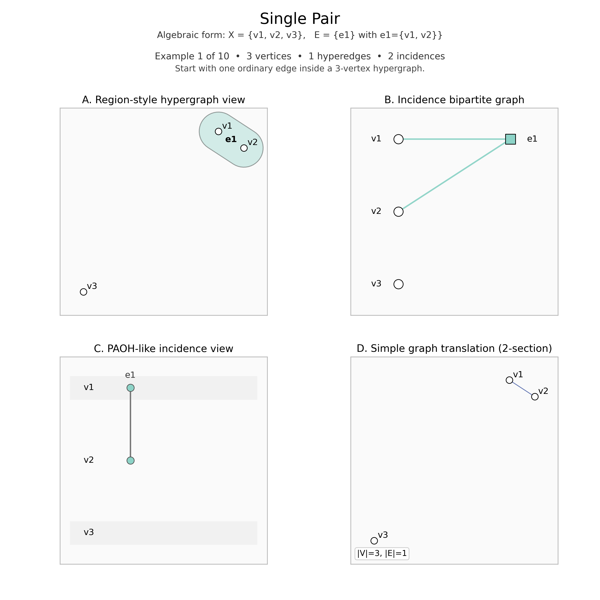
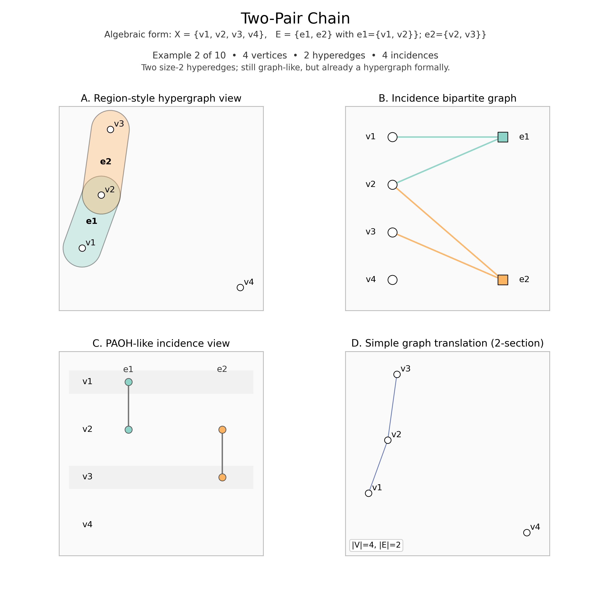
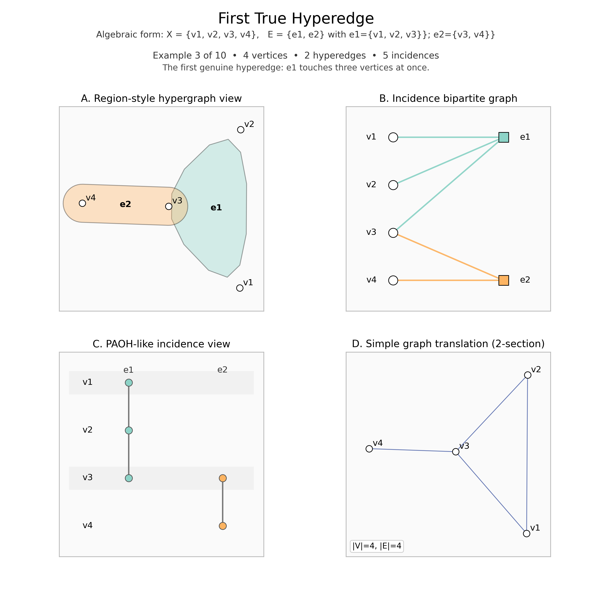
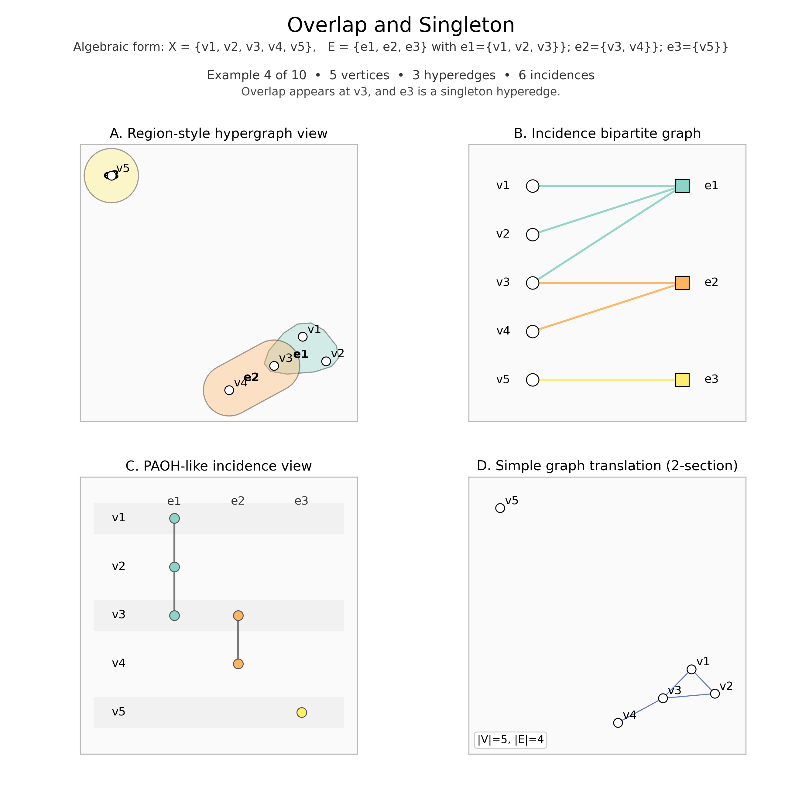
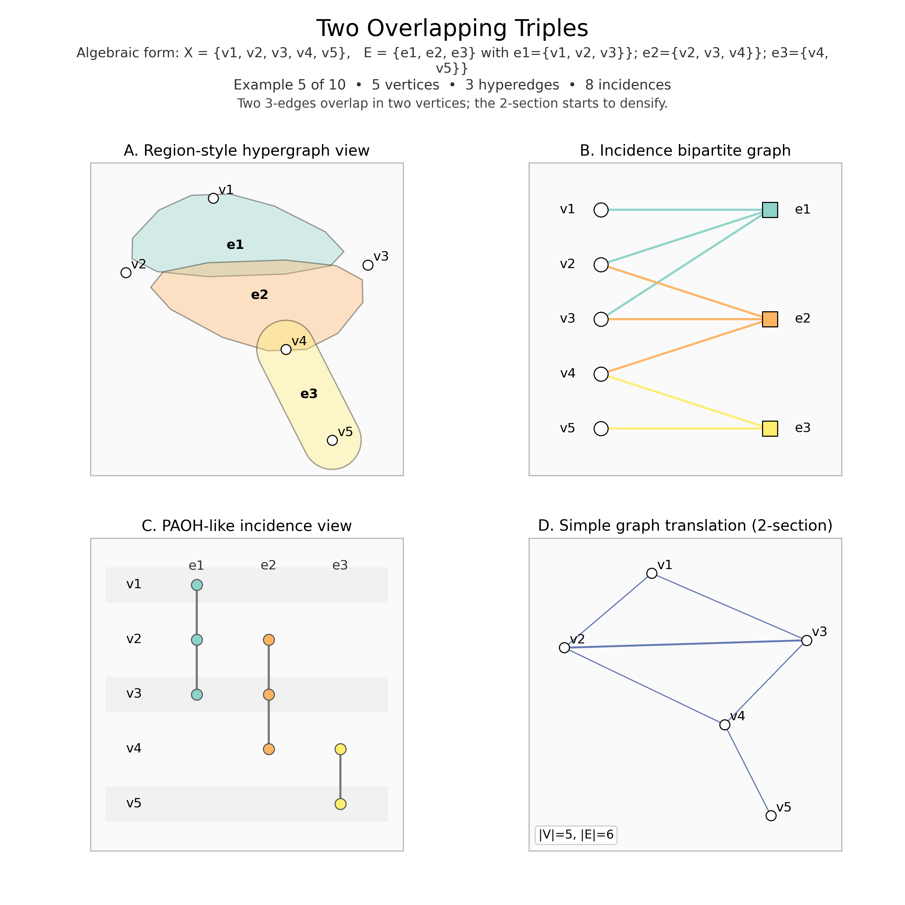
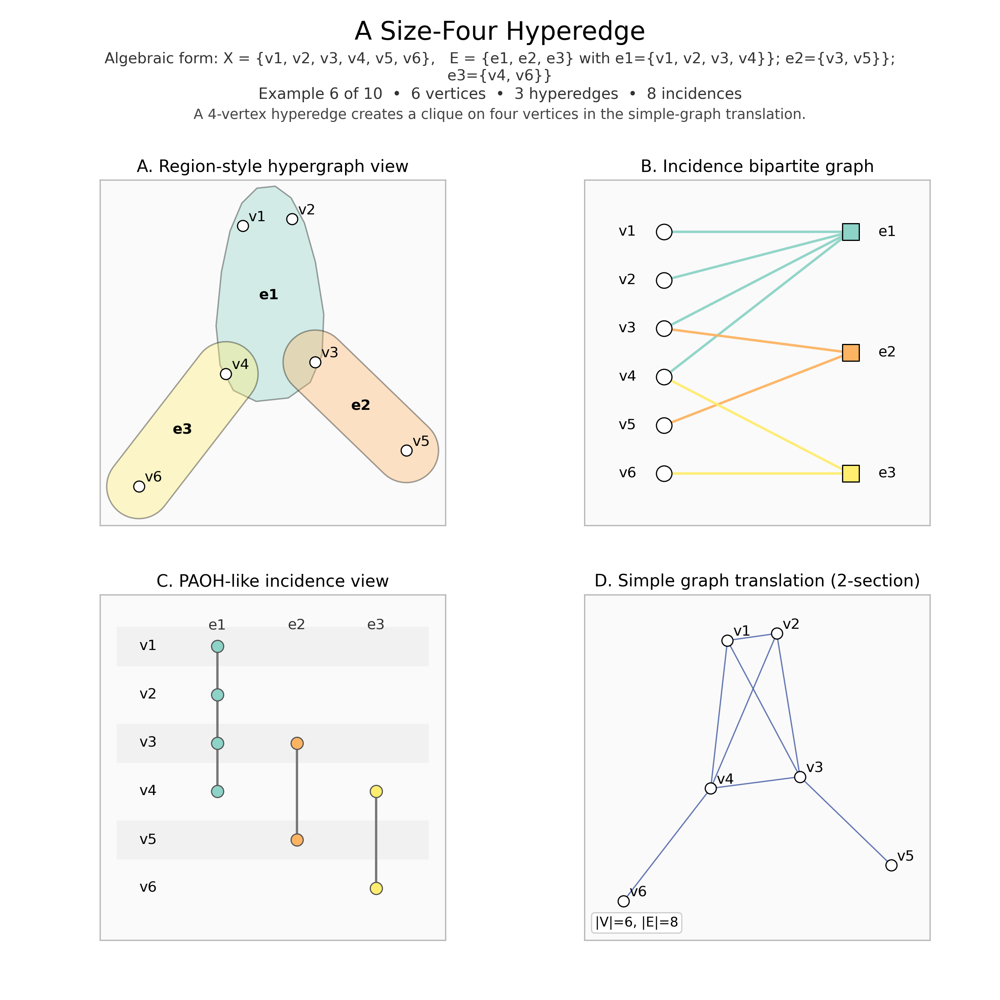
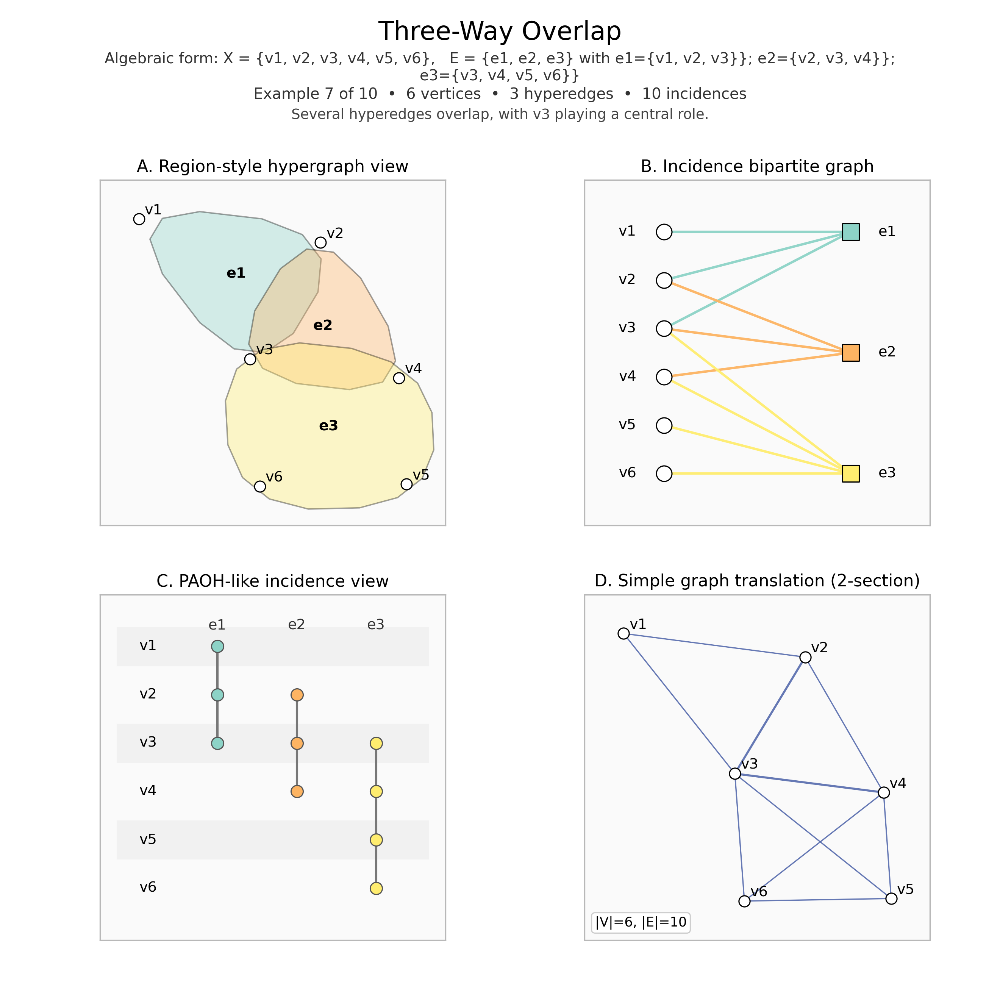
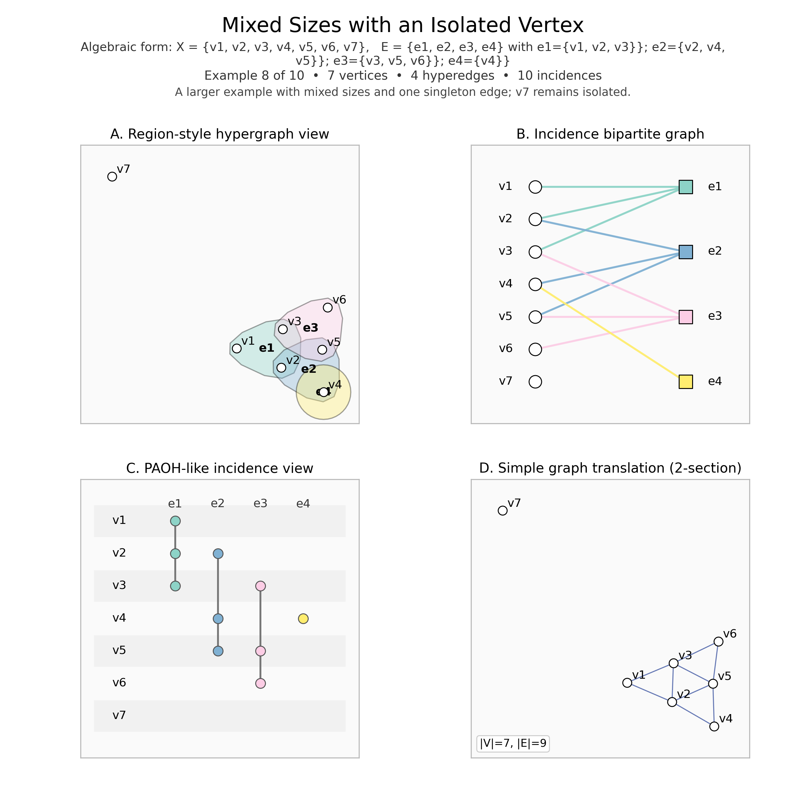
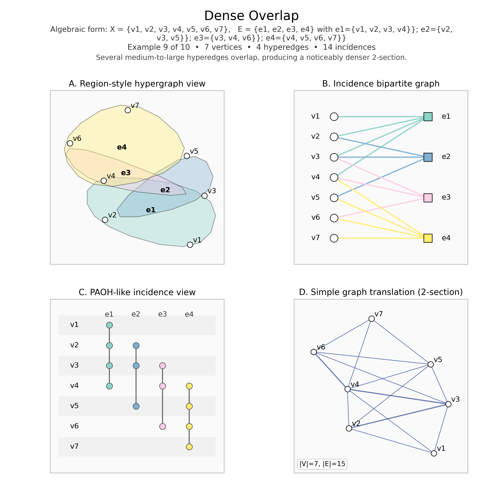
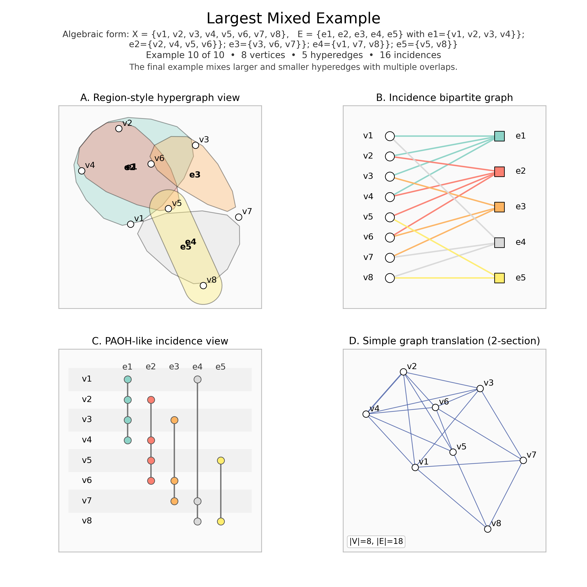

Graph theory · an interactive research tutorial
Hypergraphs: From Intuitive Visualizations to Combinatorial Theorems
Understanding higher-order relationships through set systems, incidence structures, mathematical proofs, animated constructions, and computational experiments.
01 · Begin with a picture
What changes when an edge can contain more than two vertices?
Animation Video for Hypergraphs
Pause or use Previous / Next step to read any frame. The six vertex positions and the four edge colours continue into the builder below. Playback changes only this illustration.
Suppose A, B, and C write one paper together. The set {A,B,C} preserves that collaboration as one event. Three pairwise links record who met whom, but cannot tell us whether there was one joint paper or three separate two-author papers.
An ordinary simple undirected graph
G=(V,E), E⊆C(V,2).
C(V,2), also written (V choose 2), is the family of all two-element subsets of V. Thus an edge has two distinct endpoints, with no order and no repeated copy.
A finite simple hypergraph, by our convention
H=(V,ℰ), ℰ⊆2V∖{∅}.
The power set 2V contains every subset of V. We allow distinct nonempty hyperedges, including singletons. Ordinary simple undirected graphs are exactly the 2-uniform case.
From a pair to overlapping groups
02 · A running example
Build a hypergraph from scratch
The animation introduced a six-vertex hypergraph. We now construct and modify the same object, one hyperedge at a time. It starts with V={A,B,C,D,E,F} and the same four groups, positions, and colours. Every display marked “live example” shares your edits; the introductory animation keeps its own fixed example.
A coloured hub is one hyperedge. A spoke and small endpoint ring mean membership; line crossings and background regions carry no membership information. Above five edges, the builder separates vertices and hubs into two columns to keep memberships readable.
Select members
Draft edge: ∅ · cardinality 0 · not yet added
Exact set representation
Select an edge here, at a hub, or in a matrix column. A vertex selected in the incidence graph or matrix row highlights its memberships everywhere.
03 · A precise language
Definitions are modelling choices
Convention. V is finite; ℰ is a set of distinct, nonempty subsets of V. Singletons, nested edges, isolated vertices, and the empty family are allowed. “Simple” here means no repeated edges; some authors also forbid containment, giving a clutter or Sperner family. These are definitions and structural assumptions, rather than extra set-theoretic axioms.
Order, size, degree
The order is |V|; the size is |ℰ|. The cardinality |e| counts an edge’s members. The degree deg(v)=|{e∈ℰ:v∈e}| counts edges containing v.
Initially, order=6, size=4, |e₂|=2, deg(B)=2, and deg(F)=1.
Uniformity and rank
A k-uniform hypergraph has |e|=k for every edge. A pair is 2-uniform; a triple is 3-uniform. Our example is non-uniform, with sizes 3,2,3,3.
Rank is max{|e|:e∈ℰ}, initially 3; we set the empty family’s rank to 0.
Isolation and substructure
A vertex is isolated when deg(v)=0. Remove e₄: F becomes isolated, while the order stays 6.
A subhypergraph has V′⊆V and ℰ′⊆ℰ, with all retained edges contained in V′. Our vertex-induced version retains original edges wholly contained in V′; it does not truncate them.
An indexed-edge model permits distinct edge labels with identical members. This extension matters in duality. The builder rejects duplicates. Create {A}, then {A,B}, to see a singleton and nested edges; neither violates our simple convention.
A subhypergraph is not a cropped picture. With V′={A,B,C,D}, the original edges wholly contained in V′ are e₁={A,B,C} and e₂={B,D}. Our induced subhypergraph discards e₃ and e₄. Intersecting every edge with V′ instead would produce a different set system, including {C,D} and {A}.
04 · One incidence, two counts
The matrix is a membership ledger
Rows are vertices, columns are edges. Define Bve=1{v∈e}: 1 means membership, 0 means absence. Row sums are degrees; column sums are cardinalities.
Select the membership statement to highlight its vertex, edge, spoke, and matrix cell together. This chain follows your current matrix selection and builder edits.
Proposition · incidence counting.
∑v∈V deg(v) = ∑e∈ℰ |e|.
Double-counting proof. Let I={(v,e):v∈e}. Partition I by vertex: its parts have sizes deg(v). Partition I by hyperedge: its parts have sizes |e|. Both sums equal |I|, counting every incidence once.
Initially the degrees are (2,2,2,2,2,1), the sizes are (3,2,3,3), and both sums equal 11. All live values recompute after edits. Step through the 1s to connect algebra with individual memberships.
Read the sums in either order.
deg(C)=BC,1+BC,2+BC,3+BC,4=1+0+1+0=2.∑v∑j Bv,j=2+2+2+2+2+1=11.∑j∑v Bv,j=3+2+3+3=11.
These are finite sums, so exchanging their order leaves the value unchanged. The matrix’s eleven 1s are the eleven spokes of the original hypergraph.
05 · Same object, different lenses
Keep the incidence information
The set diagram in §2, this bipartite graph, and the matrix encode the same labelled relation. Every incidence graph is bipartite, because each link joins a vertex node to an edge node. This says nothing about Property B in §11.
A projection with irreversible loss
The 2-section joins distinct u,v when they lie together in some hyperedge. A k-edge becomes a clique of C(k,2) pairs.
Precise projection rule.
E₂(H)={{u,v}: u≠v and there exists e∈ℰ with {u,v}⊆e}.G₂(H)=(V,E₂(H)), with each unordered pair retained once.(BBT)uv=∑jBu,jBv,j counts shared hyperedges.
For u≠v, adjacency is the condition (BBT)uv>0; the diagonal records degrees and is excluded from the simple graph’s edges.
Counterexample. On {A,B,C}, ℰ₁={{A,B,C}} and ℰ₂={{A,B},{B,C},{A,C}} differ, yet both have 2-section K₃. The projection is not injective. A singleton leaves no pairwise edge.
In general |E₂(H)|≤∑e∈ℰC(|e|,2), because different groups may contain the same pair. For {{A,B,C},{A,B,D}}, the six pair contributions produce only five distinct edges: AB occurs twice. The running example’s contributions do not overlap, so 3+1+3+3=10 distinct pairs.
06 · All possible groups of a fixed size
Uniform hypergraphs and exact counting
A k-uniform family uses pairs for k=2, triples for k=3, or quadruples for k=4. The complete family K(k) n contains every k-subset. Here C(n,k)=n!/[k!(n−k)!] is the binomial coefficient; [n]={1,…,n}. We use C(n,k)=0 outside 0≤k≤n.
Exact counts, 1≤k≤n.
|ℰ|=C(n,k),
deg(v)=C(n−1,k−1).
deg(v)=C(n−1,k−1).
Derivation. Choose k of n vertices for an edge. For an edge containing v, choose k−1 others from n−1. Counting incident pairs also gives nC(n−1,k−1)=kC(n,k).
For n=5,k=3 there are 10 edges, degree 6 at every vertex, and 30 incidences. The explorer lists exact counts for the full family, while drawing one subset at a time.
Count ordered choices, then remove their order.
C(5,3)=(5·4·3)/(3·2·1)=10.deg(1)=C(4,2)=(4·3)/(2·1)=6.5·6=3·10=30 incidences.
Every triple appears 3! times among ordered selections. Fixing vertex 1 leaves two places to fill from four others. These degree formulas apply to the complete uniform family; an arbitrary 3-uniform family may have unequal degrees.
07 · Overlap has several meanings
Pairwise does not mean all together
The intersection matrix has entry |eᵢ∩eⱼ|; the diagonal is |eᵢ|. Pairwise intersecting means every two distinct edges meet. The family {{A,B},{B,C},{A,C}} meets pairwise but has empty total intersection. A star has a common vertex. A nested family has containments, which an antichain forbids.
Extremal set theory asks how large a family can be under a specified overlap condition. Sections 12–14 compare three different restrictions.
Intersections as a matrix product.
(BTB)ij=∑vBv,iBv,j=|eᵢ∩eⱼ|.
A term contributes 1 exactly when v belongs to both edges. In the original example e₁∩e₃={C}, giving entry 1; e₁∩e₄={A}; the diagonal entries are 3,2,3,3. This product counts intersections, while the explicit set family identifies the shared vertices.
08 · Exchange the roles
Duality is transposition
Make one dual vertex eᵢ per original edge, and one indexed dual edge e*v={eᵢ:v∈eᵢ} per original vertex v.
B(H*)=B(H)T
. Hence |e*v|=degH(v) and dual vertex eᵢ has degree |eᵢ|. Transposing twice recovers the labelled incidence structure.
Identical incidence neighbourhoods yield repeated dual edges; isolated vertices yield empty dual edges. Our dual display retains indexed edges including empties, extending the simple convention. Collapsing them could destroy double-duality.
One row becomes one column.
BC,·=(1,0,1,0) → e*C={e₁,e₃}.B(H*)e₁,C=B(H)C,e₁=1.|e*C|=degH(C)=2; degH*(e₁)=|e₁|=3.
The two sides of every equality name the same incidence in opposite roles. The explorer retains all labels, even if two resulting dual edges have equal members.
09 · Travel through memberships
Paths, cycles, and connectivity
A Berge path is v₀,e₁,v₁,…,eℓ,vℓ with distinct vertices, distinct edges, and {vᵢ₋₁,vᵢ}⊆eᵢ. A Berge cycle has distinct v₀,…,vℓ₋₁ and edges e₁,…,eℓ, with vℓ=v₀; we allow ℓ≥2. A length-2 cycle needs two distinct edges sharing two vertices.
Connectivity criterion. Two original vertices are connected exactly when they lie in one incidence-graph component. A shortest incidence-graph path repeats no node; its alternating nodes give a Berge path. The reverse conversion is immediate. An isolated vertex forms its own component.
Initially A,e₁,C,e₃,E,e₄,A is a Berge cycle of length 3. Loose and tight uniform paths impose other overlap conditions; these notions are not interchangeable.
Check a path one membership at a time. A,e₁,B,e₂,D is a Berge path: {A,B}⊆e₁ and {B,D}⊆e₂, with no vertex or edge repeated. Its Berge length is 2; the corresponding incidence-graph path has 4 links. In general, a length-ℓ Berge path traverses 2ℓ incidence links.
10 · Pack groups or hit them
Matchings, covers, and hitting sets
A matching consists of pairwise vertex-disjoint edges; ν(H) is its maximum size. A transversal T⊆V meets every edge; τ(H) is its minimum size.
Proposition. For a finite hypergraph with nonempty edges and rank at most r,
ν(H) ≤ τ(H) ≤ rν(H).
Proof. A transversal needs different vertices for disjoint matching edges. For the other bound take a maximum matching M. An edge avoiding its union could be added, contradicting maximality. This union is a transversal with at most r|M| vertices. For an empty family both parameters are zero.
Exact finite enumeration searches vertex subsets for a minimum cover and edge subsets for a maximum matching. Greedy chooses a vertex meeting the most uncovered edges, breaking ties in vertex order. It is feasible but need not be optimal. “Maximum” means largest; “maximal” means no further edge can be added.
Initially ν=2 (e₂,e₄), τ=2 (for example {A,D}), so 2≤2≤6. Empty edges, excluded here, cannot be hit.
Inspect the live matching and transversal witnesses
Why {A,D} works in the initial example. A meets e₁ and e₄; D meets e₂ and e₃. No single vertex meets every edge. The disjoint edges e₂={B,D} and e₄={A,E,F} force any transversal to use at least two vertices, so this two-vertex cover is optimal.
11 · A constraint on every group
Colouring and Property B
A weak proper 2-colouring assigns two colours so that no hyperedge is monochromatic. Existence of such a colouring is Property B. In 2-uniform graphs this is bipartiteness; in larger edges vertices of the same colour may share an edge.
Fixed Fano family. {123,145,167,246,257,347,356}, where “123” means {1,2,3}. Each pair is on exactly one line and each point is on three lines. The figure uses explicit membership, rather than Euclidean straight lines.
Proposition. The Fano plane has no proper 2-colouring. [3]
Counting proof. If all seven lines were mixed, each would contain exactly one same-colour pair. Each pair belongs to a unique line, so there would be 7 same-colour pairs. With a blue points, the actual number is C(a,2)+C(7−a,2), whose integer minimum is 9 at a=3 or 4. Contradiction.
Its incidence graph is bipartite, but that does not colour its original vertices properly. Exhaustively checking all 128 colourings verifies this finite example; the counting argument is the proof. A singleton prevents any weak proper colouring.
The contradiction numerically. The most balanced split is three blue and four orange vertices: C(3,2)+C(4,2)=3+6=9 same-colour pairs. A mixed triple accounts for only one such pair, so seven mixed Fano lines could account for only seven. Unbalanced colour classes increase the count. This argument uses the Fano family’s unique line through each pair.
12 · Extremal sets I
Sperner’s theorem: a widest layer
An antichain ℱ⊆2[n] has no distinct members related by inclusion. {{1,2},{1,3},{2,3}} is one; {{1},{1,2}} is not. {{1},{2}} is an antichain of disjoint sets, showing that antichain and intersecting are different properties.
Sperner’s theorem. For an antichain ℱ on an n-element set, n≥0,
|ℱ| ≤ C(n,⌊n/2⌋).
A middle layer attains equality. [1]
Proof via maximal chains. A permutation gives a chain of initial segments, meeting an antichain at most once. A set A of size a appears in a!(n−a)! of the n! permutation chains. Counting yields the LYM inequality
∑A∈ℱ 1/C(n,|A|) ≤ 1.
All denominators are at most C(n,⌊n/2⌋), so |ℱ| divided by this maximum is at most 1.At n=4 the lattice levels have sizes 1,4,6,4,1. All six pairs form a largest antichain. Select a singleton and a containing pair to violate the condition.
A Lubell sum ≤1 alone does not certify an antichain; the explorer checks containment directly.
LYM at n=4. Each pair occurs in 2!·2!=4 of the 4!=24 permutation chains. All six pairs therefore give 6·4=24 incidences with chains and Lubell sum 6/C(4,2)=1. By contrast {{1},{1,2}} has Lubell sum 1/4+1/6=5/12<1 but is not an antichain.
13 · Extremal sets II
Erdős–Ko–Rado: how large can an intersecting family be?
A star consists of all k-subsets containing one fixed vertex. Its members intersect and its size is C(n−1,k−1).
Erdős–Ko–Rado theorem. For integers k≥1 and n≥2k, any pairwise intersecting family ℱ of k-subsets of [n] satisfies |ℱ|≤C(n−1,k−1). Stars attain equality. [2]
Proof sketch · Katona’s circle method. Arrange [n] cyclically. The key circle lemma says an intersecting collection of length-k cyclic intervals has at most k members when n≥2k. There are (n−1)! cyclic orders; each fixed k-set is an interval in k!(n−k)! orders. Count pairs (order, member of ℱ appearing as an interval):
|ℱ| k!(n−k)! ≤ k(n−1)!.
Rearrangement gives the bound. The nontrivial circle lemma is proved in Katona’s paper; this is a proof sketch, not a complete proof of that ingredient.At n=4,k=2, the star {12,13,14} and triangle {12,13,23} both have size 3. Equality therefore need not specify a unique star at n=2k. If n<2k, all k-subsets intersect and the stated bound need not hold.
The exact include/exclude search uses at most 15 candidate edges. It prunes only when a branch cannot improve the optimum. Finite enumeration verifies the selected instance, not the general theorem.
See the assumption in action. At n=5,k=2, the star {12,13,14,15} has C(4,1)=4 members and meets the bound. At n=3,k=2, all three pairs intersect, exceeding C(2,1)=2. The hypothesis n≥2k excludes that counterexample.
14 · Geometry adds an assumption
The interval Helly property
Interval Helly theorem. A finite nonempty family of nonempty closed real intervals meeting pairwise has nonempty total intersection. [4]
Endpoint proof. Put L=max aᵢ and R=min bᵢ for intervals [aᵢ,bᵢ]. Intervals attaining these extrema exist by finiteness. Their intersection forces L≤R. Every interval contains [L,R], which is precisely the common intersection.
Intervals form a set system on ℝ. For a finite hypergraph take consecutive blocks of a finite ordered vertex set; the endpoint proof still applies. Arbitrary families such as {AB,BC,AC} need not be Helly. Finiteness matters: [m,∞), m=1,2,…, meet pairwise but have empty total intersection.
Initial endpoint calculation. For [1,6], [3,8], and [3,6], L=max(1,3,3)=3 and R=min(6,8,6)=6. Their common intersection is [3,6]. If L>R, the interval attaining L and the one attaining R are already a disjoint pair, so pairwise intersection fails.
15 · Theory meets simulation
Random hypergraphs H(k)(n,p)
Fix n labelled vertices and edge size k. Include each of the C(n,k) candidates independently with probability p. Increasing p changes the density of group relationships.
Exact expectations.
𝔼[|ℰ|]=p C(n,k),
𝔼[deg(v)]=p C(n−1,k−1).
𝔼[deg(v)]=p C(n−1,k−1).
Derivation. Express each count as a sum of edge-inclusion indicators, each of mean p. For deg(v), only candidates containing v contribute. Linearity of expectation yields both formulas. Independence defines this model, though linearity itself does not require it.
Expand the indicator calculation.
Xe=1 if candidate e is included, and 0 otherwise.𝔼[Xe]=1·p+0·(1−p)=p.|ℰ|=∑e∈C(V,k)Xe.𝔼[|ℰ|]=∑e𝔼[Xe]=∑ep=pC(n,k).
For n=6,k=3,p=0.3, the expectations are 0.3·20=6 edges and 0.3·10=3 edges at a fixed vertex. These are ensemble averages, not requirements on each sample.
Simulation estimate: a reproducible 32-bit linear congruential generator supplies pseudorandom variates for this teaching example. Holding n,k,seed fixed couples samples across p, so increasing p only adds edges. The diagram displays at most 16 edge hubs and reports full counts. Trial means include every sampled edge. Display precision is at most four decimals, with no intermediate rounding.
16 · Choose a model for a question
Where the group itself matters
People and projects
Vertices are researchers; an edge is one paper’s author list or a project’s participants. Repeated collaborations need indexed edges or weights. Pairwise graphs suffice for questions about who has collaborated with whom.
Communication and biology
A group message can be an edge over recipients; a proposed protein complex an edge over proteins. These are synthetic modelling examples, not empirical findings. Membership alone encodes neither direction nor causal influence.
Covering resources
Vertices are resources; each edge lists resources capable of satisfying one requirement. A transversal meets every requirement. Reversing the incidence viewpoint gives the usual set-cover formulation.
A modelling decision. If A,B,C coauthor one paper and A,E,F coauthor another, retaining the two edges lets us find a smallest group of researchers meeting every paper. A 2-section may suffice if only pairwise coauthorship matters.
From pictures to theorems
Incidence counting changes perspective; duality exchanges roles. Matchings compare packing and covering. Sperner and Erdős–Ko–Rado impose different set constraints; interval Helly adds geometry. Identify the exact assumption before interpreting a drawing or computation.
Preserved material · ten original examples
A visual reference gallery
All ten original PNGs and their Python generator are retained. They progress from one pair to mixed families with singletons, isolation, and dense overlap. Each compares regions, bipartite incidence, vertical incidence, and the 2-section.
The original region panels use smoothed hulls: enclosure may include a nonmember or miss a boundary point. Their set definitions and incidence panels are authoritative. New figures use explicit memberships. Each gallery example is a separate hypergraph, rather than an edit of the running example.
Open ten original examples and their exact set descriptions
1. Single Pair
Algebraic example. X={v1, v2, v3} and E={e1}, where e1={v1, v2}.
Set-family form.
H=(X,E), · X={v1, v2, v3}, · E={{v1, v2}}.
H=(X,E), · X={v1, v2, v3}, · E={{v1, v2}}.
One ordinary edge on three vertices.

Original gallery. One ordinary edge on three vertices. File path:
2026-04-21-hypergraphs-visualization/hypergraph_01_single_pair.png.2. Two-Pair Chain
Algebraic example. X={v1, v2, v3, v4} and E={e1, e2}, where e1={v1, v2}; e2={v2, v3}.
Set-family form.
H=(X,E), · X={v1, v2, v3, v4}, · E={{v1, v2}, {v2, v3}}.
H=(X,E), · X={v1, v2, v3, v4}, · E={{v1, v2}, {v2, v3}}.
Two size-2 edges sharing one vertex.

Original gallery. Two size-2 edges sharing one vertex. File path:
2026-04-21-hypergraphs-visualization/hypergraph_02_two_pairs_chain.png.3. First True Hyperedge
Algebraic example. X={v1, v2, v3, v4} and E={e1, e2}, where e1={v1, v2, v3}; e2={v3, v4}.
Set-family form.
H=(X,E), · X={v1, v2, v3, v4}, · E={{v1, v2, v3}, {v3, v4}}.
H=(X,E), · X={v1, v2, v3, v4}, · E={{v1, v2, v3}, {v3, v4}}.
A three-vertex hyperedge appears for the first time.

Original gallery. A three-vertex hyperedge appears for the first time. File path:
2026-04-21-hypergraphs-visualization/hypergraph_03_first_true_hyperedge.png.4. Overlap and Singleton
Algebraic example. X={v1, v2, v3, v4, v5} and E={e1, e2, e3}, where e1={v1, v2, v3}; e2={v3, v4}; e3={v5}.
Set-family form.
H=(X,E), · X={v1, v2, v3, v4, v5}, · E={{v1, v2, v3}, {v3, v4}, {v5}}.
H=(X,E), · X={v1, v2, v3, v4, v5}, · E={{v1, v2, v3}, {v3, v4}, {v5}}.
One overlap at v3 and one singleton edge.

Original gallery. One overlap at v3 and one singleton edge. File path:
2026-04-21-hypergraphs-visualization/hypergraph_04_overlap_and_singleton.png.5. Two Overlapping Triples
Algebraic example. X={v1, v2, v3, v4, v5} and E={e1, e2, e3}, where e1={v1, v2, v3}; e2={v2, v3, v4}; e3={v4, v5}.
Set-family form.
H=(X,E), · X={v1, v2, v3, v4, v5}, · E={{v1, v2, v3}, {v2, v3, v4}, {v4, v5}}.
H=(X,E), · X={v1, v2, v3, v4, v5}, · E={{v1, v2, v3}, {v2, v3, v4}, {v4, v5}}.
Two 3-edges overlap in two vertices.

Original gallery. Two 3-edges overlap in two vertices. File path:
2026-04-21-hypergraphs-visualization/hypergraph_05_two_overlapping_triples.png.6. A Size-Four Hyperedge
Algebraic example. X={v1, v2, v3, v4, v5, v6} and E={e1, e2, e3}, where e1={v1, v2, v3, v4}; e2={v3, v5}; e3={v4, v6}.
Set-family form.
H=(X,E), · X={v1, v2, v3, v4, v5, v6}, · E={{v1, v2, v3, v4}, {v3, v5}, {v4, v6}}.
H=(X,E), · X={v1, v2, v3, v4, v5, v6}, · E={{v1, v2, v3, v4}, {v3, v5}, {v4, v6}}.
A 4-edge creates a larger clique in the simple-graph translation.

Original gallery. A 4-edge creates a larger clique in the simple-graph translation. File path:
2026-04-21-hypergraphs-visualization/hypergraph_06_size_four_edge.png.7. Three-Way Overlap
Algebraic example. X={v1, v2, v3, v4, v5, v6} and E={e1, e2, e3}, where e1={v1, v2, v3}; e2={v2, v3, v4}; e3={v3, v4, v5, v6}.
Set-family form.
H=(X,E), · X={v1, v2, v3, v4, v5, v6}, · E={{v1, v2, v3}, {v2, v3, v4}, {v3, v4, v5, v6}}.
H=(X,E), · X={v1, v2, v3, v4, v5, v6}, · E={{v1, v2, v3}, {v2, v3, v4}, {v3, v4, v5, v6}}.
Several edges meet around the same central vertices.

Original gallery. Several edges meet around the same central vertices. File path:
2026-04-21-hypergraphs-visualization/hypergraph_07_three_way_overlap.png.8. Mixed Sizes with an Isolated Vertex
Algebraic example. X={v1, v2, v3, v4, v5, v6, v7} and E={e1, e2, e3, e4}, where e1={v1, v2, v3}; e2={v2, v4, v5}; e3={v3, v5, v6}; e4={v4}.
Set-family form.
H=(X,E), · X={v1, v2, v3, v4, v5, v6, v7}, · E={{v1, v2, v3}, {v2, v4, v5}, {v3, v5, v6}, {v4}}.
H=(X,E), · X={v1, v2, v3, v4, v5, v6, v7}, · E={{v1, v2, v3}, {v2, v4, v5}, {v3, v5, v6}, {v4}}.
Mixed edge sizes appear while v7 stays isolated.

Original gallery. Mixed edge sizes appear while v7 stays isolated. File path:
2026-04-21-hypergraphs-visualization/hypergraph_08_with_isolated_vertex.png.9. Dense Overlap
Algebraic example. X={v1, v2, v3, v4, v5, v6, v7} and E={e1, e2, e3, e4}, where e1={v1, v2, v3, v4}; e2={v2, v3, v5}; e3={v3, v4, v6}; e4={v4, v5, v6, v7}.
Set-family form.
H=(X,E), · X={v1, v2, v3, v4, v5, v6, v7}, · E={{v1, v2, v3, v4}, {v2, v3, v5}, {v3, v4, v6}, {v4, v5, v6, v7}}.
H=(X,E), · X={v1, v2, v3, v4, v5, v6, v7}, · E={{v1, v2, v3, v4}, {v2, v3, v5}, {v3, v4, v6}, {v4, v5, v6, v7}}.
Multiple medium and large edges now overlap heavily.

Original gallery. Multiple medium and large edges now overlap heavily. File path:
2026-04-21-hypergraphs-visualization/hypergraph_09_dense_overlap.png.10. Largest Mixed Example
Algebraic example. X={v1, v2, v3, v4, v5, v6, v7, v8} and E={e1, e2, e3, e4, e5}, where e1={v1, v2, v3, v4}; e2={v2, v4, v5, v6}; e3={v3, v6, v7}; e4={v1, v7, v8}; e5={v5, v8}.
Set-family form.
H=(X,E), · X={v1, v2, v3, v4, v5, v6, v7, v8}, · E={{v1, v2, v3, v4}, {v2, v4, v5, v6}, {v3, v6, v7}, {v1, v7, v8}, {v5, v8}}.
H=(X,E), · X={v1, v2, v3, v4, v5, v6, v7, v8}, · E={{v1, v2, v3, v4}, {v2, v4, v5, v6}, {v3, v6, v7}, {v1, v7, v8}, {v5, v8}}.
The final example mixes several overlaps and edge sizes.

Original gallery. The final example mixes several overlaps and edge sizes. File path:
2026-04-21-hypergraphs-visualization/hypergraph_10_largest_mixed_example.png.Original figure generator · Reproducible mathematical assertions
Sources & reproducibility
References and further reading
The SVG constructions are original. These sources support the named results; elementary counting and endpoint proofs are presented above.
- Peter J. Cameron, Notes on Combinatorics , §7.1 (Sperner and LYM), §§7.2, 7.5 (intersecting families). Author’s course notes.
- G. O. H. Katona (1972), “A simple proof of the Erdös–Chao Ko–Rado theorem”, Journal of Combinatorial Theory, Series B 13(2), 183–184. Source of the cyclic-order method.
- Yury Person and Mathias Schacht, “Almost all hypergraphs without Fano planes are bipartite”, SODA 2009, 217–226. Its abstract identifies the Fano incidence structure and failure of 2-colourability; its asymptotic theorem is beyond this tutorial.
- László Babai, REU 2007, Apprentice Program, Lecture 6. Interval Helly theorem and Helly-type ideas.
- Claude Berge, Hypergraphs: Combinatorics of Finite Sets, North-Holland, 1989. Further reading on incidence structures, paths, and transversals; compare conventions carefully.
Computations are bounded: builder ≤12 edges; exact cover ≤12 vertices; exact matching ≤16 edges; EKR ≤15 candidates; uniform n≤8; random trials=500. The page needs no build step or external library. Semantic HTML and Unicode mathematics remain readable offline.